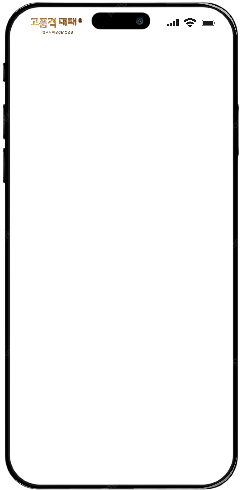

"대패의 격"이 다르다. 고기의 기준을 바로 세우다.
프리미엄 냉삼과 풍성한 셀프바로 완성하는
대패삼겹의 새로운 기준
단순히 유행을 따르는 브랜드가 아닌, 오랫동안 사랑받을 수 있는 브랜드 — 고품격대패가 추구하는 가치입니다.

리뷰가 증명하는 고품격대패!
전 가맹점 거짓 없이 공개하는 안정적인 월 매출
* 카탈로그에 명시된 실제 운영 데이터 기준입니다. 상권·평수·운영 방식에 따라 매장별 수치는 달라질 수 있습니다.
정확한 창업비용은 상권·평수·업종변경 여부에 따라 달라지므로, 상담을 통해 정확히 안내드립니다.
왕십리를 시작으로 천호, 시흥 은계까지 — 꾸준히 늘어난 매장이 브랜드의 신뢰를 증명합니다.
방문 예약, 창업 상담, 제휴 문의까지 — 남겨주시면 담당자가 순차적으로 연락드립니다.
창업 전문가가 직접 상담해드려요